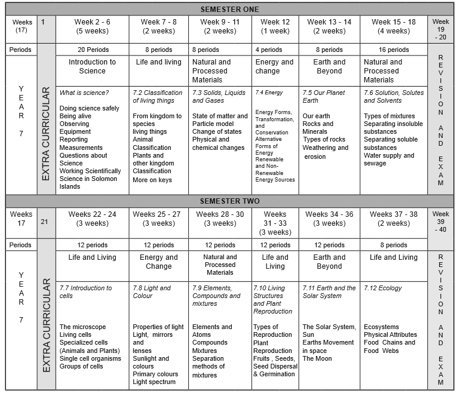

Junior secondary science syllabus, years 7-9

General Learning Outcomes: 7.1.1; 7.1.2; 7.1.5; 7.1.6
PHeT simulations are installed on all laptops.
Topics:
Description: Play with objects on a teeter totter to learn about balance. Test what you’ve learned by trying the Balance Challenge game.
Sample Learning Goals:
This interactive learning activity is aligned with Solomon Islands Year Seven Science Curriculum:
General Learning Outcomes: 7.2.2; 7.2.3; 7.2.4; 7.2.5; 7.2.6
General Learning Outcomes: 7.2.2, 7.2.3
General Learning Outcomes: 7.2.1 know the characteristics of living things (k); 7.2.1.1 describe the main characteristics of living things: use energy, use air, breath, produce waste, respond to stimuli and grow
The activities in this unit support the Solomon Islands Year 7 Science Curriculum.
They are linked to Year 7 Science Sub-Strand 7.3: Solids, Liquids, and Gases.
There are a variety of resources that can be used to support student-learning about:
Siyavula Interactive Textbook: Particle Model of Matter
General Learning Outcomes: 7.3.1, 7.3.2, 7.3.3, 7.3.4, 7.3.5, 7.3.6
Topics: Atoms, molecules, states of Matter.
Description: Heat, cool and compress atoms and molecules and watch as they change between solid, liquid and gas phases.
Sample Learning Goals:
This interactive learning activity is aligned with Solomon Islands Year Seven Science Curriculum:
Strand: Natural and Processed Materials
Sub-strand: 7.3 Solids, Liquids, and Gases
General Learning Outcome:
7.3.2 understand the different states of matter (u)
7.3.3 be able to investigate physical changes (s)
Specific Learning Outcome:
7.3.2.1 use the idea of particle movement to explain the difference between the three states of matter: solids, liquids and gases
7.3.3.1 investigate and explain the changes caused by heating and cooling of solids, liquids, and gases
7.3.2 understand the different states of matter (u)
7.3.2.1 use the idea of particle movement to explain the difference between the three states of matter: solids, liquids and gases
7.3.3 be able to investigate physical changes (s)
7.3.3.1 investigate and explain the changes caused by heating
and cooling of solids, liquids, and gases
7.3.3.2 draw a simple particle diagram to show the change of
state from one form to another
7.3.4 be able to show that in a physical change the mass of the substance remains the same, only particles rearranged (s)
7.3.4.1 conduct an experiment to observe that in a physical change the properties of the materials change, but the mass remains unchanged: melting of ice cubes
Topics:
Description: Pump gas molecules to a box and see what happens as you change the volume, add or remove heat, change gravity, and more. Measure the temperature and pressure, and discover how the properties of the gas vary in relation to each other.
Sample Learning Goals:
This interactive learning activity is aligned with Solomon Islands Year Seven Science Curriculum:
Strand: Natural and Processed Materials
Sub-strand: 7.3 Solids, Liquids, and Gases
General Learning Outcome:
7.3.3 be able to investigate physical changes (s)
Specific Learning Outcome:
7.3.3.1 investigate the changes caused by heating and cooling of solids, liquids, and gases
This activity addresses the following Solomon Islands Year 7 Science Learning Outcomes for Unit 7.4: Energy
7.4.1 be able to show that energy is the ability to do work (s)
7.4.1.1 demonstrate that energy is used when work is done; example, boiling an egg, lifting a book, digging a hole
7.4.2 know that there are different forms of energy (k)
7.4.2.1 identify and describe different forms of energy;
Heat, sound, elastic, electrical
This activity addresses the following Solomon Islands Year 7 Science Learning Outcomes for Unit 7.4: Energy
7.4.1 be able to show that energy is the ability to do work (s)
7.4.1.1 demonstrate that energy is used when work is done; example, boiling an egg, lifting a book, digging a hole
7.4.2 know that there are different forms of energy (k)
7.4.2.1 identify and describe different forms of energy;
Heat, sound, elastic, electrical